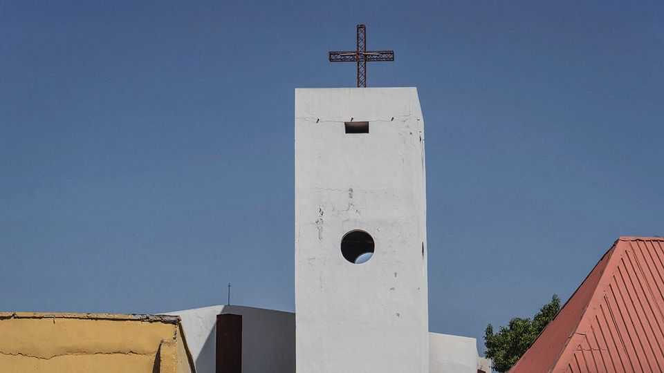

Nigeria’s Christian groups scramble to win over Trump’s America
To help their cause, they are adopting tropes and rhetoric from the American right
June 4th 2026

A BILL currently being considered by America’s House of Representatives would attach new conditions to financial aid sent to Nigeria. Republicans in Congress say they want Nigeria’s government to do more about the violence in the northern and “Middle Belt” states of the country. Specifically, they want it to ensure better protection of Nigerian Christians against “brutal persecution”.
The bill would be a pain for Nigeria’s government, which might have a harder time getting American aid if it passes. But it would be a victory of sorts for the country’s Christian pressure groups, which have been lobbying Donald Trump’s administration since the president’s second term began last year. While Nigeria’s government stresses the complexity of the country’s security crisis, Christian activists are finding it useful to follow American evangelicals in framing the violence in religious terms. Some even allege that a “genocide” of Nigerian Christians is under way.
Thousands of people, both Christians and Muslims, are killed in attacks in Nigeria every year, mostly in the north, where the state is weakest. The violence stems from jihadism, banditry and conflicts between herders and farmers. Only a small fraction of incidents involve Christians being directly targeted for their faith.
Yet pressure groups claim that Christians are systematically persecuted and demand American intervention. “If international attention is what is required to spur decisive governmental action, then the Christian community in Nigeria welcomes it,” says Archbishop Daniel Okoh, who leads the Christian Association of Nigeria.
The archbishop and others echo a narrative forged in America that resonates with officials in the Trump administration. MAGA-friendly missionary groups argue that “mainstream media” underplay the threat to Nigerian Christians. To counter this, the groups package violent scenes into videos for social media to show “the truth” about persecution. “Not every video we see is doctored or manipulated,” says Ebenezer Obadare of the Council on Foreign Relations, an American think-tank, “but at some point, you find it impossible to tell the difference.”
One source of viral content is Equipping the Persecuted, an Iowa-based missionary group that runs a website called Truth Nigeria. The site says it reports on violence in Nigeria “with fearless honesty”. But it pursues a clear narrative of Christian victims and Muslim perpetrators, mixing reports of attacks in Nigeria with MAGA-minded content such as reports on supposed mass vigils in Africa for Charlie Kirk, an American right-wing activist who was murdered last year.
Christian activists approve of the country’s re-designation by America late last year as a “country of particular concern” for religious freedom. They have also welcomed American air strikes against terrorist groups in northern Nigeria and the dispatch of American soldiers to help the army fight militants.
Other benefits may come in the form of money and power. The bill making its way through the House recommends that some funds be dispensed to “faith-based organisations”. Nigerian groups may get a slice of this pie, as well as a bump in donations from sympathetic American Christians. They may also hope for America to boost their influence vis-à-vis prominent Muslim politicians from northern Nigeria.
Yet their focus on the persecution of Christians is poisoning Nigerian politics. The president’s national security adviser faces baseless accusations that he is in league with terrorists because he is Muslim and Fulani (a majority-Muslim ethnic group whose members are often stigmatised as jihadists and criminals). Mr Obadare warns that as next year’s presidential election approaches, “there will be more killings, because those who want to use this issue as a cudgel to beat [the president] are going to try and stoke more tension.” In Abuja, the capital, several people interviewed said they did not feel safe discussing the killing of Christians.
Even so, those wishing to draw American attention to security problems or political threats in Africa increasingly speak in terms of Christians’ rights. In Tanzania, the repression of religious leaders who denounced election-time violence is being framed as a threat to Christians. Even the Rapid Support Forces, a party in Sudan’s civil war that has itself been designated by America as a danger to religious freedom, is appealing to the Trump administration by stressing its army foes’ ties to Islamists. The strategy looks likely to spread. ■
Sign up to the Analysing Africa, a weekly newsletter that keeps you in the loop about the world’s youngest—and least understood—continent.